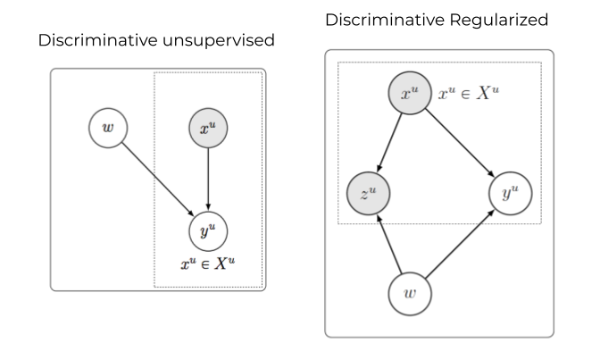

Safa Cicek

I did my PhD in the Electrical and Computer Engineering department at UCLA where I worked under the supervision of Stefano Soatto in the Vision Lab. I successfully defended my PhD dissertation on January 21, 2021.
I obtained my B.Eng degree from Electrical Engineering department of Bilkent University, Turkey, 2015. I obtained my MS degree from Electrical and Computer Engineering department of UCLA, 2017.I am interested in deep learning, semi-supervised learning, unsupervised domain adaptation and reinforcement learning.
News
[February, 2021] I am joining Waymo in Mountain View as full-time.
[January, 2021] I successfully defended my PhD dissertation, Visual Learning with Weak Supervision.
[January, 2021] Our paper, Learning Topology from Synthetic Data for Unsupervised Depth Completion accepted to IEEE Robotics and Automation Letters (RAL 2021).
[September, 2020] Our paper, Targeted Adversarial Perturbations for Monocular Depth Prediction accepted to Neural Information Processing Systems (NeurIPS 2020).
[September, 2020] Our paper, Spatial Class Distribution Shift in Unsupervised Domain Adaptation: Local Alignment Comes to Rescue accepted to Asian Conference on Computer Vision (ACCV 2020).
[August, 2020] Our paper, Generative Feature Disentangling for Unsupervised Domain Adaptation accepted to European Conference on Computer Vision (ECCV 2020) workshop.
[June, 2020] I am joining Waymo Research in Mountain View for my summer internship.
[August, 2019] Our paper, Input and Weight Space Smoothing for Semi-supervised Learning accepted to International Conference on Computer Vision (ICCV 2019) workshop.
[July, 2019] Our paper, Unsupervised Domain Adaptation via Regularized Conditional Alignment accepted to International Conference on Computer Vision (ICCV 2019) as oral (%4.6 of all submissions).
[June, 2019] I am joining Adobe Research in San Jose for my summer internship.
[January, 2019] Our paper, MARL-PPS: Multi-agent Reinforcement Learning with Periodic Parameter Sharing accepted to International Conference on Autonomous Agents and Multiagent Systems (AAMAS 2019).
[July, 2018] Our paper, SaaS: Speed as a Supervisor for Semi-supervised Learning accepted to European Conference on Computer Vision (ECCV 2018).
[June, 2018] I am joining Honda Research Institute in Mountain View for my summer internship.
[March, 2018] I advanced to candicacy.
[January, 2017] I passed PhD Preliminary Examination of UCLA ECE.
Contact
safacicek at gmail dot com
Web
Linkedin Github Twitter Youtube
Publications
|
Learning Topology from Synthetic Data for Unsupervised Depth Completion Alex Wong, Safa Cicek, Stefano Soatto paper |
|
|
Targeted Adversarial Perturbations for Monocular Depth Prediction Alex Wong, Safa Cicek, Stefano Soatto paper poster |
|
|
Spatial Class Distribution Shift in Unsupervised Domain Adaptation: Local Alignment Comes to Rescue Safa Cicek, Ning Xu, Zhaowen Wang, Hailin Jin, Stefano Soatto paper |
|
|
Disentangled Image Generation for Unsupervised Domain Adaptation Safa Cicek, Ning Xu, Zhaowen Wang, Hailin Jin, Stefano Soatto paper supplementary |
|
|
Unsupervised Domain Adaptation via Regularized Conditional Alignment Safa Cicek, Stefano Soatto paper poster |
|
|
Input and Weight Space Smoothing for Semi-supervised Learning Safa Cicek, Stefano Soatto paper poster |
|

|
SaaS: Speed as a Supervisor for Semi-supervised Learning Safa Cicek, Alhussein Fawzi, Stefano Soatto paper poster |
|
MARL-PPS: Multi-agent Reinforcement Learning with Periodic Parameter Sharing Safa Cicek, Alireza Nakhaei, Stefano Soatto, Kikuo Fujimura paper poster |
|
PhD Thesis
|  |
Visual Learning with Weak Supervision thesis slides |